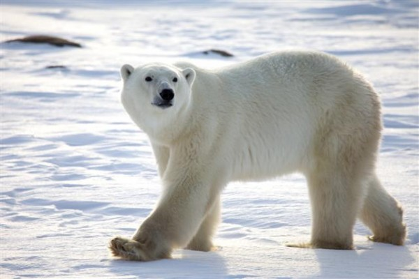
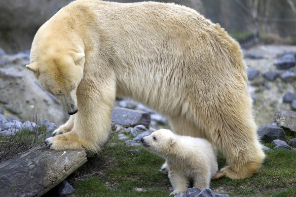
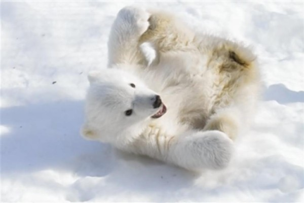
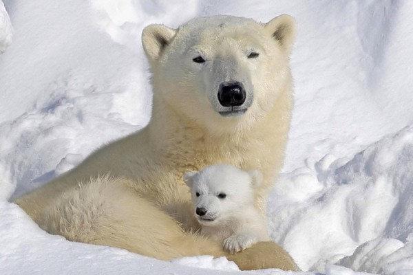
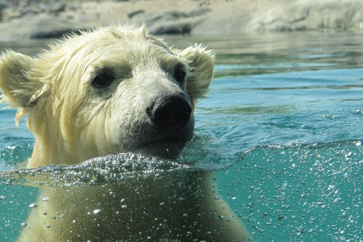

1 / 5

A polar bear's fur is not white!! It is hollow. The fur reflects light. The hollow fur also traps the suns heat to help keep the polar bear warm.
2 / 5

Polar bear babies weigh a little more than a pound when they are born.
3 / 5

When curled up, a polar bear may cover its muzzle (nose) with a paw to help conserve heat.
4 / 5

Paw pads with rough surfaces help prevent polar bears from slipping up on the ice.
5 / 5

Polar bears can swim up to 100 miles (161 kilometers at a time). Polar bears can swim an average of 6 miles per hour.
❮
❯